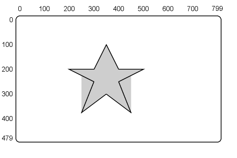

| Chapter 2 | Contents | Chapter 4 |
The write control command controls how the terminal draws images on the screen. Write control command options let you set attributes and parameters for writing at the pixel level. You can perform 10 major tasks with write control commands.
You can use these write controls in other commands, as temporary write controls. For example, you can use temporary write controls in vector, curve, screen, and position commands. The terminal uses the temporary setting until you use a new command or another temporary option. For more information, see the chapter on the particular command.
This option lets you define a multiplication factor for pixel vector (PV) values used in moving and drawing tasks. Normally, a PV value tells the terminal to move or draw through one screen coordinate in a certain direction. A multiplication factor of n tells the terminal to move or draw through n coordinates for each PV value.
You use the following format for the PV multiplication option. For more information, see the "Pixel Vector (PV) System" section in Chapter 1.
W(M<multiplication factor>)
where
W identifies a write control command.
M identifies a PV multiplication option.
<multiplication factor> is a numeric value to use for the PV multiplication factor.
You can temporarily change the PV multiplication factor for some commands, such as position, screen, vector, and circle commands. To select a temporary value, you use a temporary write control in one of those commands. The temporary value stays in effect until the next command or temporary write control. For more information, see the chapter for a specific command.
The VT300 has an 8-bit pattern memory that lets you define the appearance of lines and shaded areas in ReGIS drawings. ReGIS uses this pattern for all writing tasks. Each bit in the pattern turns one pixel on or off.
For example, suppose you use a vector command to draw a line on the screen. As the line is drawn, ReGIS reads the pattern memory bit by bit to determine if the next pixel should be on (1) or off (0). A 1 value sets the pixel to the foreground shade/color. A 0 value sets the pixel to the background shade/color.
The VT300 starts each writing task from the first position in pattern memory. The writing cycles through the complete 8-bit pattern, unless you use a new command key letter. If you want a command to start at the first position of pattern memory, start the command with a command key letter.
For example, suppose you draw several vectors or curves in a row. Some vectors or curves must start at the first position of pattern memory. Start those commands with the command key letter.
The default for pattern memory is all 1s. If you draw a line using the default pattern, the terminal sets all pixels in the line to the foreground shade/color. You can change the default pattern with one of the three pattern control options.
There are 10 standard write patterns available. You select a pattern by its assigned value: 0 through 9. You use the following format for the standard pattern select option.
W(P<pattern number>)
where
P identifies a pattern control option.
<pattern number> is a number (0 through 9) that selects 1 of the 10 standard writing patterns.
Figure 3-1 shows how patterns 1 through 9 appear on the screen. Pattern 0 is all bits off. Table 3-1 lists the bit pattern for each standard pattern. Figure 3-2 shows a closer view of each pattern, using a vector that is 24 pixels long.
| Pattern Number | Binary Pattern | Description |
|---|---|---|
| 0 | 00000000 | All-off write pattern |
| 1 | 11111111 | All-on write pattern |
| 2 | 11110000 | Dash pattern |
| 3 | 11100100 | Dash-dot pattern |
| 4 | 10101010 | Dot pattern |
| 5 | 11101010 | Dash-dot-dot pattern |
| 6 | 10001000 | Sparse dot pattern |
| 7 | 10000100 | Asymmetrical sparse dot pattern |
| 8 | 11001000 | Sparse dash-dot pattern |
| 9 | 10000110 | Sparse dot-dash pattern |
 |
||||||||
|
||||||||
This option lets you create your own patterns, rather than using a standard pattern. The command format is similar to the format for the select standard pattern option. The difference is that you use a specific binary pattern instead of a standard pattern number. You use the following format for using a binary pattern.
W(P<binary pattern>)
where
P identifies a pattern control option.
<binary pattern> is a pattern of 1 and 0 bits, from 2 to 8 bits long.
You can use binary patterns up to 8 bits long (the size of pattern memory). If you specify more than 8 bits, the terminal uses only the last 8 bits of your pattern. If you specify less than 8 bits, the terminal repeats as much of your pattern as it can in the remaining bits of pattern memory.
Patterns of 2, 4, or 8 bits will repeat as full subunits within the 8-bit pattern memory. Patterns of 3, 5, 6, or 7 bits will only repeat as far as possible.
Figure 3-3 shows examples of patterns you can create. Each pattern is a vector 24 pixels long. You can see from this figure that patterns of 3, 5, 6, and 7 bits do not repeat as complete subunits.
|
||||||||||
You can create a writing pattern that is longer than 8 pixels by specifying a multiplication factor for the 8-bit pattern memory. This factor determines how many pixels are affected by each bit in the 8-bit pattern memory. The minimum value is 1, the maximum value is 16. The default value is 2.
You can use a standard pattern or a specified binary pattern. Figure 3-4 shows how multiplication factors can change the patterns from Figures 3-2 and 3-3.
|
||||||
The following examples show the format of pattern multiplication commands.
| Standard Pattern | Specified Binary Pattern |
|---|---|
| W(P4(M5)) | W(P11000011(M3)) |
where
P4 identifies a pattern control option and selects standard pattern 4.
M5 identifies a multiplication option and selects a factor of 5.
P11000011 identifies a pattern control option and specifies a binary pattern to use for writing.
M3 identifies a multiplication option and selects a factor of 3.
This option selects the foreground color/shade for an image, or for part of an image. On the VT330, you can use up to four shades in an image. On the VT340, you can use up to 16 colors/shades. You can only select shades/colors already loaded into the output map. See the "Output Mapping" section in Chapter 2.
You can use three forms of the foreground intensity option, depending on how you define the color/shade. The following examples show how.
| Output Map Location | RGB Specifier | HLS Specifier |
|---|---|---|
| W(I0) | W(I(R)) | W(I(H180L50S100)) |
where
I identifies a foreground intensity.
0 selects output map location 0 for the foreground color.
R is an RGB value that selects the output map location containing the color closest to red.
H180L50S100 is an HLS value that selects the output map location containing the color closest to yellow.
You use this option in combination with the background intensity option for the screen command. Both options have the same basic format, but start with different command key letters (W for write command, S for screen command).
The foreground intensity option only selects the shade/color for writing that follows the option. This feature lets you select different colors for different parts of an image, without affecting other parts of the same image.
One of the foreground shades/colors is always the same as the background. To see the background shade/color in the foreground, you must write that shade/color over another shade/color.
When you select RGB or HLS colors, the VT300 compares your color to the colors stored in the output map and uses the closest match. However, the terminal's ability to compare colors is limited. If you select a color that is too different from those in the output map, the result is unpredictable.
This option lets you select which graphics planes the terminal can write to. The option defines a code that selects the graphics planes used for writing tasks such as vectors, curves, and text. The default setting lets the terminal write to all planes.
The VT330 has a 2-plane bitmap for pixel memory. This means each pixel has a 2-bit code, 1 bit for each plane. The 2-bit code selects one of four possible shades stored in the output map. The plane select option defines a 2-bit mask for the VT330, 1 bit for each plane.
The VT340 has a 4-plane bitmap for pixel memory. This means each pixel has a 4-bit code, 1 bit in each plane. The 4-bit code selects 1 of 16 possible shades/colors stored in the output map. The plane select option defines a 4-bit mask for the VT340, 1 bit for each plane.
NOTE: The screen erase command erases all planes, regardless of the plane select control setting. See "Screen Erase Control" in Chapter 2.
You use the following format for the plane select option.
W(F<code number>)
where
F identifies a plane select control option.
<code number> is a number that selects a 2-bit code (VT330) or 4-bit code (VT340). The code indicates which planes you can write to.
For the VT330, you use a code number from 0 to 3. Table 3-2 shows you which planes these four codes select.
For the VT340, you use a code number from 0 to 15. Table 3-3 shows you which planes these 16 codes select.
Notice that the plane numbers in Tables 3-2 and 3-3 correspond to the binary numbers you use to access the pixels. The number in the Code column corresponds to the plane you are writing to.
NOTE: Whether you use a VT330 or VT340, remember to restore writing to all planes after using 1-plane or no-plane writing.
| Command | Code | Planes You Can Write To |
|---|---|---|
| W(F0) | 00 | None |
| W(F1) | 01 | Plane 0 |
| W(F2) | 10 | Plane 1 |
| W(F3) | 11 | All planes |
| Command | Code | Planes You Can Write To |
|---|---|---|
| W(F0) | 0000 | None |
| W(F1) | 0001 | Plane 0 |
| W(F2) | 0010 | Plane 1 |
| W(F3) | 0011 | Planes 0 and 1 |
| W(F4) | 0100 | Plane 2 |
| W(F5) | 0101 | Planes 0 and 2 |
| W(F6) | 0110 | Planes 1 and 2 |
| W(F7) | 0111 | Planes 0, 1, and 2 |
| W(F8) | 1000 | Plane 3 |
| W(F9) | 1001 | Planes 0 and 3 |
| W(F10) | 1010 | Planes 1 and 3 |
| W(F11) | 1011 | Planes 0, 1, and 3 |
| W(F12) | 1100 | Planes 2 and 3 |
| W(F13) | 1101 | Planes 0, 2, and 3 |
| W(F14) | 1110 | Planes 1, 2, and 3 |
| W(F15) | 1111 | All planes |
The plane select option changes the write mask to allow writing to each plane individually. You can use this operation for three main applications.
Complement writing
Complement writing (described later in this chapter) changes the
bits of the bitmap to their opposite values. For example, in the
VT330, complement writing changes a pixel with an intensity value
of 3 (I3) to 0 (I0). However, if the plane select mask allows writing
only at plane 0, then the new value is I1. if the write mask allows
writing only to plane 1, then the new value is I2.
Overlays
You can draw a fixed image in one plane and an overlay for that
image in another plane. For example, you can draw the fixed grid
for a graph in one plane and the data for the graph in another
plane.
Alternating displays
The VT330 lets you draw a separate image in each plane, if you
limit each image to one shade. The VT340 lets you draw a separate
image in each plane or any combination of planes. Each image has
full pixel resolution. Remember, each image is limited to the background
value (for pixel off) and a single foreground shade/color value
(for pixel on).
There are four major writing styles you can use with the write control command: overlay, replace, complement, and erase. The writing style affects the way ReGIS draws images into the bitmap (graphics page memory). Each writing style affects pattern memory differently.
| Writing Style | Command | Part of Pattern Memory Affected |
|---|---|---|
| Overlay | V | Foreground only (default). |
| Replace | R | Foreground and background. |
| Complement | C | Foreground only. Ignores the foreground intensity. |
| Erase | E | Foreground only. Uses background intensity or color to overwrite foreground. |
Overlay writing lets you draw new images in the foreground only. Overlay writing does not affect the background.
Pattern memory uses bitmap values of 1 for foreground, 0 for background. Overlay writing only changes those parts of the new image defined by 1s (foreground). Bitmap values do not change for those parts of the new image defined by 0s (background).
Overlay writing is the default setting for the VT300. You do not have to use a command to select overlay writing, unless you have used the complement, erase, or replace writing option.
You use the following format for the overlay writing option.
W(V)
where
V identifies the overlay writing option.
Figure 3-5 shows an example of overlay writing. The shaded gray square is drawn first, then the slashed square. This figure uses the same basic graphic image used for the complement, erase, and replace writing examples that follow. However, the square is shaded light gray instead of black, so you can see the overlay.
 |
Replace writing lets you draw new images in the foreground and the background. In the pattern memory bitmap, replace writing affects 1s (foreground) and 0s (background).
You use the following format for the replace writing option.
W(R)
where
R identifies the replace writing option.
Figure 3-6 shows a simple example that uses replace writing to draw a pattern over a shaded square. First the black square is drawn, then the slashed square is drawn after using the replace writing option. The slashed square is the same pattern shown in Figure 3-5 for overlay writing. You can compare the effects.
Complement writing lets you write over an image in the "opposite" shade/color. The word "opposite" refers to the value of the shade/color in the terminal's bitmap, not the actual color produced on the screen.
Complement writing affects only the foreground, ignoring the setting of the foreground intensity (I) option. In the pattern memory bitmap, complement writing only changes the parts of the image defined by 1s (foreground).
Figure 3-7 shows a simple example of complement writing. First a black square is drawn, then a slashed square. The slashed square is drawn in black, but turns white where it overlaps the black square. The rest of the pattern remains black. The pattern complements both the black square and the white background.
The VT330 bitmap provides 2 bits of memory for each pixel, 1 bit for each plane. Those 2 bits hold a binary code that points to one of four output map locations. Each output map location defines the intensity value for one shade.
The VT340 bitmap provides 4 bits of memory for each pixel, 1 bit for each plane. Those 4 bits hold a binary code that points to 1 of 16 output map locations. Each output map location defines the intensity value for one shade/color.
When you use complement writing to write over a pixel, the terminal changes the binary code for that pixel to its opposite value. The new binary code selects a new output map location. The following table shows how complementary writing changes binary codes. Output map locations are in parentheses.
| VT330 | VT340 | ||
|---|---|---|---|
| Old value | New value | Old value | New value |
| 00 (0) | 11 (3) | 0000 (0) | 1111 (15) |
| 01 (1) | 10 (2) | 0011 (3) | 1100 (12) |
| 10 (2) | 01 (1) | 0101 (5) | 1010 (10) |
| 11 (3) | 00 (0) | 1111 (15) | 0000 (0) |
The new shade/color is the shade/color stored in the new output location.
Complement writing only affects the bitmap planes that you can write to. You select these planes with the plane select control option in this chapter. You can combine the plane select control and complement writing options. You use the following formats.
| Complement Writing Alone |
Complement Writing With the Plane Select Control Option |
|---|---|
| W(C) | W(F<code number>>,C) |
where
C identifies the complement writing option. If you use the C option alone, ReGIS uses the current value of the plane select control (F) option for complement writing. Complement writing ignores the foreground intensity setting.
F<code number> identifies the plane control option and specifies a code that selects which planes will be affected by the complement writing option. See the "Plane Select Control" section in this chapter for a list of codes.
Table 3-4 shows how complement writing changes bitmap values in the VT340, based on the planes selected for writing.
Table 3-5 lists some examples of how complement writing changes bitmap values in the VT340, based on the planes selected for writing. The complete table would be 16 rows × 16 columns. The table does not show W(F3,C) through W(F13,C).
| Initial Value | Complemented Value | ||
|---|---|---|---|
| W(C) | W(F1,C) | W(F2,C) | |
| I0 (00) |
I3 (11) |
I1 (01) |
I2 (10) |
| I1 (01) |
I2 (10) |
I0 (00) |
I3 (11) |
| I2 (10) |
I1 (01) |
I3 (11) |
I0 (00) |
| I3 (11) |
I0 (00) |
I2 (10) |
I1 (01) |
NOTE: The values listed for the W(C) command assume you can write to both planes. If you cannot write to both planes, then you can use the W(F3,C) command to produce the same values listed for W(C).
| Initial Value | Complemented Value | |||
|---|---|---|---|---|
| W(C) | W(F1,C) | W(F2,C) ... | W(F14,C) | |
| I0 (0000) |
I15 (1111) |
I1 (0001) |
I2 (0010) |
I14 (1110) |
| I1 (0001) |
I14 (1110) |
I0 (0000) |
I3 (0011) |
I15 (1111) |
| I2 (0010) |
I13 (1101) |
I3 (0011) |
I0 (0000) |
I12 (1100) |
| I3 (0011) |
I12 (1100) |
I2 (0010) |
I1 (0001) |
I13 (1101) |
| I4 (0100) |
I11 (1011) |
I5 (0101) |
I6 (0110) |
I10 (1010) |
| I5 (0101) |
I10 (1010) |
I4 (0100) |
I7 (0111) |
I11 (1011) |
| I6 (0110) |
I9 (1001) |
I7 (0111) |
I4 (0100) |
I8 (1000) |
| I7 (0111) |
I8 (1000) |
I6 (0110) |
I5 (0101) |
I9 (1001) |
| I8 (1000) |
I7 (0111) |
I9 (1001) |
I10 (1010) |
I6 (0110) |
| I9 (1001) |
I6 (0110) |
I8 (1000) |
I11 (1011) |
I7 (0111) |
| I10 (1010) |
I5 (0101) |
I11 (1011) |
I8 (1000) |
I4 (0100) |
| I11 (1011) |
I4 (0100) |
I10 (1010) |
I9 (1001) |
I5 (0101) |
| I12 (1100) |
I3 (0011) |
I13 (1101) |
I14 (1110) |
I2 (0010) |
| I13 (1101) |
I2 (0010) |
I12 (1100) |
I15 (1111) |
I3 (0011) |
| I14 (1110) |
I1 (0001) |
I15 (1111) |
I12 (1100) |
I0 (0000) |
| I15 (1111) |
I0 (0000) |
I14 (1110) |
I13 (1101) |
I1 (0001) |
NOTE: The values shown for W(C) command assume that all planes are enabled for writing. If all planes are not enabled, then W(F15,C) produces the same values as W(C).
This option changes the shade/color used for the writing commands that follow the option. In effect, you erase areas by writing over them with the background or foreground color. Erase writing remains in effect until you change the writing option.
Erase writing ignores the bitmap values in the pattern memory. The current writing pattern remains constant.
You can erase writing with negative writing on or off. With negative writing off (default), erase writing erases areas by writing over them with the current background shade/color. With negative writing on, erase writing erases areas by writing over them with the foreground shade/color.
You use the following format for the basic erase writing option.
W(E)
where
E identifies the erase writing option.
Figure 3-8 shows the effect that negative writing has on erase writing. The slashed square is drawn first, then the solid white (A) or black (B) square. Figure 3-9 shows the effect that the foreground select option can have on erase writing (when negative writing is on).
| A) | Shaded square erased using W(N0), or W(E) if negative writing off (default or previous N0). |
| B) | Shaded square erased using W(N1,E), or W(E) if negative writing on (previous N1). |
|
This option lets you reverse the effect of pattern memory. The negative pattern control changes all 1s in pattern memory to 0s, and changes all 0s to 1s. The default setting for negative pattern control is off. This option affects the drawing of all lines, shaded areas, and text.
Usually, the 1 bits in pattern memory select the foreground shade/color for a pixel, and the 0 bits select the background shade/color. When you turn negative pattern control on, the reverse is true: the 1 bits select the background, and the 0 bits select the foreground.
You use the following format for the negative pattern control option.
W(N<0 or 1>)
where
N identifies a negative pattern control option.
<0 or 1> turns the negative pattern control off (0) or on (1).
Figure 3-10 shows how the negative pattern control changes the standard patterns from Figure 3-2 and the specified binary patterns from Figure 3-3. Figure 3-10 shows the normal pattern (with negative pattern control off), then the reverse pattern (with negative pattern control on).
|
||||||
This option lets you shade the inside of a graphic object as it is drawn. During shading commands, vector and curve commands operate as usual. However, as each point in a vector or curve is drawn, shading occurs from that point to a point on a shading reference line. The shading includes the point being drawn, as well as the point on the reference line.
The default value for the shading reference line is the horizontal line defined by the Y-coordinate of the cursor position when you turn shading on. You can select a different reference line with a position argument to the shading control option.
Figure 3-11 shows how shading occurs. This figure shows different phases of a circle being drawn while the shading control option is on. The figure uses the default reference line for shading.
You can use patterns or text characters to shade a graphic object. The final result depends on the setting of several other ReGIS command options.
| Options | Pattern Shading | Character Shading |
|---|---|---|
| Pattern | yes | no |
| Pattern multiplication factor | yes | no |
| Foreground intensity | yes | yes |
| Background intensity | yes | yes |
| Plane select | yes | yes |
| Negative writing | yes | yes |
| Any overlay, erase, complement, or replace writing in effect | yes | yes |
| Text command options | no | yes |
There are three types of shading controls.
The following sections cover each control. Then the text discusses the use of multiple shading reference lines. You need multiple shading reference lines for complex graphic images, such as polygons.
|
You use the following format for the shading on/off control option.
W(S<0 or 1>)
where
S identifies the shading control option.
<0 or 1> turns shading off (0) or on (1).
When you turn shading on, the terminal uses all currently selected writing options. If the pattern is a solid line (P1), a graphic image is completely shaded at the currently selected intensity (VT330: I0 through I3, VT340: I0 through I15). The shaded image does not have an apparent outline, other than the contrast between the background intensity and the foreground intensity.
Figure 3-12 shows three simple circles shaded with different foreground intensities. This figure shows that the outline for each circle is formed by the contrast between the background and the foreground.
If you want an outline, you can simply repeat the circle command with shading off. Figure 3-13 shows the same circles drawn in Figure 3-12. To draw the outlines, the circle commands are repeated with shading off, and with a different foreground intensity from that used in shading.
All the figures in this section use the default reference line for shading. Remember, you automatically define the default reference line when you turn shading on. When you use default reference lines, you should turn shading on for each image you shade. Otherwise, the terminal always uses the last reference line defined.
| NOTE: Graphic assumes all output map values are at default shades, background intensity is S(I3), and write controls are W(F3,N0,V,I0,P1(M2)). |
||
|
| NOTE: Graphic assumes all output map values are at default shades, background intensity is S(I3), and write controls are W(F3,N0,V,I0,P1(M2)). |
||
|
You can use default reference lines or define your own reference line (next section). In either case, shading always includes the shading reference line.
For example, Figure 3-14 shows a simple graph that is shaded by using the baseline for a shading reference line. Part of the baseline has disappeared. To keep the baseline, you can move the cursor up one row before you turn shading on. Figure 3-15 shows how.
 |
||
| NOTE: Graphic assumes all output map values are at default shades, background intensity is S(I3), and write controls are W(F3,N0,V,I0,P1(M2)). |
||
|
| NOTE: Graphic assumes all output map values are at default shades, background intensity is S(I3), and write controls are W(F3,N0,V,I0,P1(M2)). |
||
|
You can change the shading pattern by selecting a writing pattern other than a solid line (P1). Figure 3-16 shows an example. In this figure, the circle is shaded with a dashed line pattern (P2). As shown, this pattern breaks the circle into horizontal bars.
NOTE: If you want to change the pattern for shading, you must specify the new pattern before you turn shading on.
|
|||
| NOTE: Graphic assumes all output map values are at default shades, background intensity is S(I3), and write controls are W(F3,N0,V,I0,P1(M2)). |
This option lets you define your own shading reference line. You can use the default shading reference line to shade most images. However, a default reference line will not work for some graphic objects.
For example you cannot use a default reference line to shade a circle with a specified center. In Figure 3-17, a shaded circle is drawn with a center at [325,125]. Then the outline of the circle is drawn with shading off. As shown, the default shading reference line produces shading outside the circle.
|
|||
| NOTE: Graphic assumes all output map values are at default shades, background intensity is S(I3), and write controls are W(F3,N0,V,I0,P1(M2)). |
You can define a horizontal or vertical reference line, using one X- or Y-coordinate. You can use an absolute or relative value for the coordinate. You use the following formats for defining a new shading reference line.
| Vertical Reference Line | Horizontal Reference Line |
|---|---|
| W(S(X)[<X position>]) | W(S[,<Y position>]) |
where
S identifies a shading control option.
(X) selects a vertical (X-axis) shading reference line.
[<X position>] is the X-coordinate value to use for the vertical reference line. If you include a Y-coordinate ([X,Y]), ReGIS ignores the Y-coordinate.
If you omit the X-coordinate ([] or [,Y]), ReGIS assumes a [+0] coordinate and uses the X-coordinate of the current active position.
[,<Y position>] is a Y-coordinate value to use for a horizontal reference line. If you include an X-coordinate ([X,Y]), ReGIS ignores the X-coordinate.
If you omit the Y-coordinate ([] or [X]), ReGIS assumes a [+0] coordinate and uses the Y-coordinate of the current active position. Omitting the Y-coordinate is the same as using the W(S1) command.
Figure 3-18 shows one way to change the shading of the circle in Figure 3-17, by defining a new shading reference line.
|
|||
| NOTE: Graphic assumes all output map values are at default shades, background intensity is S(I3), and write controls are W(F3,N0,V,I0,P1(M2)). |
You can use different reference lines to draw shaded objects with a minimum of vector or curve commands. Figure 3-19 shows some images drawn with shading reference lines that use a Y-coordinate. Figure 3-20 shows some images drawn with shading reference lines that use an X-coordinate.
| NOTE: Graphic assumes all ouput map values are at default shades, background intensity is S(I3), and write controls are W(F3, N0, V, I0, P1(M2)). |
||
|
|
The type of reference line you use has no effect on the way shading patterns are oriented. Figure 3-21 shows a circle shaded with a dashed line pattern (P2) and an X-coordinate for the reference line. This circle is identical to the circle in Figure 3-16, drawn with the default reference line. So, you can shade complex objects using horizontal or vertical reference lines, while maintaining the same pattern.
NOTE: For compatibility with previous ReGIS products, use only horizontal shading reference lines.
|
|||
| NOTE: Graphic assumes all output map values are at default shades, background intensity is S(I3), and write controls are W(F3,N0,V,I0,P1(M2)). |
This argument lets you shade objects by using text characters instead of patterns. You can use characters from the standard character sets or from an alternate set you load into the terminal.
You use the following format for the shading character select argument. You must use single or double quotes to enclose the character selected for shading.
W(S'<character>')
where
S identifies the shading control option.
' ' are quotation marks that enclose the selected shading character.
<character> selects the character cell to use for shading. The actual character used depends on the format stored in the selected character cell.
You can use text commands to select a character set and character size for the shading character. Otherwise, the terminal uses the ISO Latin-1 character set and a default character size of S1. Chapter 7 describes text commands and character sizes.
You can use character shading to produce halftone effects. This feature is useful when designing images for devices that have only two intensity values, such as dot-matrix printers. To produce the gray scale effects, you use different-density characters for shading. You must design and load these characters into the terminal. Chapter 8 describes how to design and load characters.
No matter what type of shading character you use, the terminal only displays the top 8 × 8 matrix of the 8 × 10 character cell.
Figure 3-22 shows a circle shaded with Xs. In this example, a text command selects the size of the X character, but not the character set. The terminal uses the X from the standard character set. The terminal also uses the default shading reference line.
|
|||
| NOTE: Graphic assumes all output map values are at default shades, background intensity is S(I3), and write controls are W(F3,N0,V,I0,P1(M2)). |
You can also use horizontal or vertical shading reference lines, without changing the shading pattern for complex images. You use the following formats to select a shading character and a shading reference line in the same command.
| Character Shading With a Vertical Line |
Character Shading With a Horizontal Line |
|---|---|
| W(S'<character>'(X)[<X position>]) | W(S'<character>'[<Y position>]) |
where
S identifies the shading control option.
' ' are single or double quotation marks that enclose the selected shading character.
<character> selects the character cell to use for shading.
(X)[<X position>] selects a vertical shading reference line and indicates what X-coordinate value to use for that line.
[<Y position>] selects a horizontal shading reference line and indicates what Y-coordinate value to use for that line.
ReGIS always uses a reference line for shading. For some complex images, you must use more than one shading reference line. You can use the following method to shade complex graphic images.
NOTE: Digital recommends you use the polygon fill command to shade complex figures. For shading complex figures, the polygon fill command is easier and more efficient than the shading option. See Chapter 11.
Draw the shaded graphic image in two or more sections. Use different shading reference lines for each section. Include both horizontal and vertical shading reference lines, if needed.
Figure 3-23 shows an attempt to draw a star with only one shade value and one reference line. First, the star is drawn with a dim gray shade (I1). Then the outline of the star is drawn with shading off.
Figure 3-24 takes the same basic example and breaks the image into sections, adding commands that define a second reference line and a second shade value. This figure shows one way to shade a complex graphic image. You can use other commands to draw a star.
|  | ||
| NOTE: Graphic assumes all output map values are at default shades, background intensity is S(I3), and write controls are W(F3,N0,V,I0,P1(M2)). |
||
|
|
Table 3-6 is a summary of the W command options, including any default values.
| Option | Default | Description |
|---|---|---|
| (M<n>) | 1 | PV multiplication |
| (P<0 to 9>) | 1 | Select standard pattern |
| (P<binary>) | 1 | Specify binary pattern |
| (P(M<1 to 16>)) | 2 | Pattern multiplication
|
| (I<0 to 3>) (I<0 to 15>) |
3 (VT330) 7 (VT340) |
Select foreground intensity or color |
| (I(<RGB>)) | Current color map | Select foreground intensity or color (RGB) |
| (I(<HLS>)) | None | Select foreground intensity or color (HLS) |
| (F<0 to 3>) (F<0 to 15>) |
3 (VT330) 15 (VT340) |
Plane select |
| (V,R,C, or E) | (V) | Writing style (R) for replace writing |
| (N<0 or 1>) | 0 | Negative pattern control |
| (S<0 or 1>) | 0 | Shading on/off control |
| (S[,Y]) | Current Y position | Select horizontal shading reference line |
| (S(X)[X]) | Current X position | Select vertical shading reference line |
| (S'<character>') | None | Select shading character |